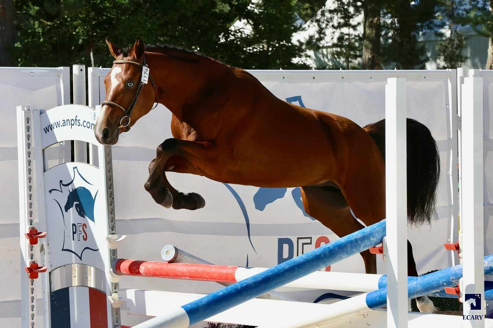

Le Club
Qui sommes-nous ?
Le Haras des perchers est un lieu dédié à la passion du cheval. Depuis sa création, notre club s'engage à offrir un cadre professionnel et chaleureux pour tous les cavaliers, que vous soyez débutant ou confirmé. Nous mettons à votre disposition des infrastructures modernes et un accompagnement personnalisé pour que vous puissiez évoluer à votre rythme.

Nos installations
Notre club dispose d’un manège couvert, de deux carrières extérieures, de X hectares de champs, de X boxes, et d'un espace de détente pour les cavaliers. Que vous soyez passionné de dressage, de CSO ou de cross, nos installations sont adaptées à toutes vos pratiques.